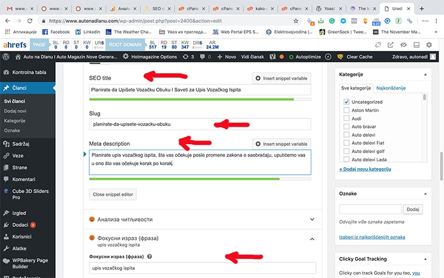
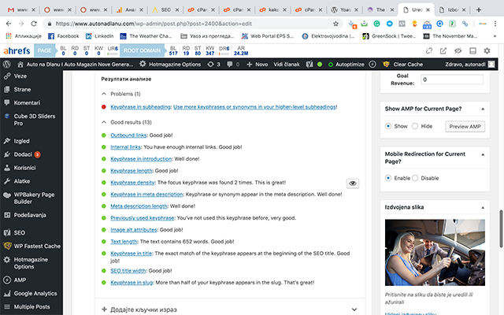
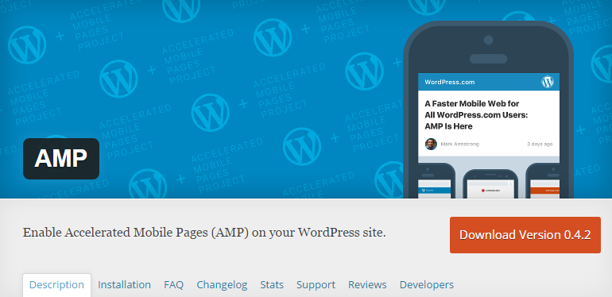

Ubrzanje Wordpress sajta

Kako optimizovati wordpress sajt
Cilj SEO optimizacije sajta je bolja pozicija na pretraživačima. Boljom pozicijom postižete veći broj organskih poseta koji treba da uzrokuju veću prodaju.
Kad kažemo optimizacija wordpress sajta mislimo na dve stvari koje je neophodno uraditi a to su: SEO onpage optimizacija i ubrzanje samog sajta.
Onpage optimizacija wordpress sajta
Da biste uradili kvalitetnu onpage optimizaciju word press sajta potreban vam je Yoast plugin.
Ovaj plugin je odlično osmišljen jer vas vodi tako da ne propustite ni jedan bitan elemenat kod SEO onpage optimizacije.
Prvo što je potrebno uraditi je da instalirate Yoast plugin. Koristite wizard za podešavanje plugina. Da biste uspešno podesili ovaj plugin možete koristiti alatku za import setovanja. Setovanje koje mi koristimo za naše klijente, možete preuzeti ovde.
Sad kad imate instaliran Yoast možete krenuti sa optimizacijom postojećih tekstova. Ispod svakog teksta nalazi se Yoast deo koji služi za optimizaciju.
Prva stvar koju optimizujete je Naslov i Opis vaše stranice. Naša preporuka je da prvo ubacite focus keyword ili glavnu ključnu reč za tu stranicu. Ta ključna reč mora biti unikatna i nikad pre korišćena na vašem sajtu.
Druga stvar zašto je bitno uneti ključnu reč je što će Yoast davati smernice u odnosu na tu ključnu reč što je jako bitno. Na primer uneli ste ključnu reč pvc stolarija. Yoast će vam odmah signalizirati da li imate ključnu reč u naslovu i dal je na početku TITLE taga.
Takodje i u opisu stranice u delu meta description takodje morate imati ključnu reč. Slika u prilogu, obeležili smo title, description, fokusni izraz.
Primetićete da je nama fokusni izraz za ovu stranicu upis vozačkog ispita. Tako da u naslovu i opisu stranice takodje ponavljamo ovu istu frazu.
Evo kako izgleda uspešna optimizacija jednog članka. Slika ispod.
Kao što možete videti sve stavke su zelene sem jedne koja je crvena. To smo namerno ostavili da vam pokažemo kako vam Yoast sugeriše šta niste dobro podesili. U ovom slučaju Yoast nam sugeriše da bi trebali da imamo još neki podnaslov koji bi imao sinonim sa ključnom reči koju koristimo.
Na slici možete videti koji su to sve elementi SEO onpage optimizacije o kojoj Yoast vodi računa a to su:
- Outbond links - Izlazni linkovi ka drugim sajtovima
- Internal links - Interni linkovi
- Korišćenje ključne reči
- Dužina ključne reči
- Ključna reč u naslovu
- Ključna reč u opisu
- Dužina meta opisa
- Da li ste pre koristili ovu ključnu reč
- Ključna reč na slici
- Dužina teksta
- Dužina title taga
- Ključna reč u nazivu linka
Kako optimizovati wordpress sajt da bude brži
Ubrzanje wordpress sajtaPosetioci nemaju vremena ni strpljenja da čekaju da se otvori neka stranica. Statistika je pokazala da su tri sekunde maksimum njihovog strpljenja. Ako se za to vreme ne otvori, oni odlaze i ne vraćaju se više.
Da bismo izbegli ovaj scenario, moramo da se posvetimo nečemu što se zove optimizacija sajta, koja je bitna iz više razloga:
- Sajt se brže učitava,
- Korisnik ima bolje iskustvo,
- Pregledaće i ostale strane,
- Što je i cilj, povećana poseta/prodaja
Postoji više načina kako da ubrzate wordpress sajt, a mi vam prepoučujemo AMP sistem za ubrzavanje WordPress sajtova, razvijen od Gugla. Ovo je open source projekat koji je primenjiv i na tablete i mobilne uređaje, što je mnogo bitno, jer u proseku 70% poseta dolazi upravo preko mobilnih telefona.
Kako da sami optimizujete WordPress sajt: Uz malo truda do fantastičnih rezultata!
Već prilikom odabira WordPress teme themeforest.net obratite pažnju kako i kojom brzinom se otvara sajt. Postoji sijaset tema koje su “glomazne”, imaju masu nepotrebnih pluginova, samim time i više skripti, te su teži za učitavanje. Neke teme se mogu lako modifikovati, a ako to nije slučaj, bolje je zamenite.
Kupili ste (ili preuzeli neku besplatnu) temu, želite da vaš sajt bude lep, pregledan i daje dobro korisničko iskustvo, šta dalje? Najpre razmišljajte kao posetilac. Svi smo nebrojeno puta posetili sajtove na kojim se teško snalazi: orijentacija je otežana, nepotrebni ili nefunkcionalni widgeti, prevelike fotografije, glomazni slajderi,neodgovarajući fontovi i boje, da ne pominjemo muziku. Takvo iskustvo ne želimo, već da naš posetilac dobije informaciju po koju je došao i zadrži se na našem sajtu.
To postižemo na dva načina:
- Optimizovanjem sajta
- Stvaranjem relevantnog i kvalitetnog sadržaja
Najpre treba preuzeti AMP plugin za WordPress , a zatim ga instalirati po uputstvima koje smo detaljno objasnili u tekstu „Kako instalirati AMP plugin za WordPress“.
Kao što možete videti, plugin ima odlične ocene, korisnici su veoma zadovoljni, a do sada je instaliran preko 100 000 puta.
Postoji i jednostavnija verzija kako optimizovati WordPress sajt!
Ukoliko vam je ovo sve komplikovano, možete koristiti i CDN servere, oni su osmišljeni tako što se vaš sajt otvara u keširanoj verziji sa najbližeg servera, te se za 4-5 sekundi može ubrzati postojeći sajt.
Potrebno je da odaberete nekog CDN provajdera, a mi predlažemo MAX CDN. Kad platite i dobijete naziv linka, instalirajte CDN plugin za WordPress. Zatim aktivirajte plugin, kliknite na “settings”, pa u prazno polje ubacite link koji ste dobili. Sačuvajte podešavanja.
Plugin će sam da zameni na svim mestima gde je potrebno keširanje, da ubaci link u slike, JS, CSS i tako dalje.
Videli smo da je pluginove lako preuzeti i instalirati, ali su potrebna dodatna podešavanja da bi oni radili brzo i pouzdano. Primera radi, popularni i odlično ocenjeni SEO YOAST plugin za optimizovanje teksta može u velikoj meri da uspori rad sajta ukoliko nije “sinhronizovan” s ostalim pluginovima.
Ukoliko imate pitanja i nedoumice, stojimo na raspolaganju. Još jednom podsećamo: podjednako kao optimizovan sajt, bitan je i kvalitetan i relevantan sadržaj, stoga to treba da vam budu prioriteti i rezultati neće izostati.
Ukoliko vam je ovaj tekst bio koristan, sigurno će biti i vašim prijateljima pa vas molimo da ga podelite na vašoj društvenoj mreži. Hvala!

SEO smernice za 2019 godinu
Pročitajte na šta treba da obratite pažnju u 2019 godini....
Detaljnije...

Linkbuilding Tutorijal za 2019
Zašto su backlinkovi i dalje najvažniji za optimizaciju sajta...
Detaljnije...

Kad dolaze SEO rezultati?
Kada SEO počinje da generiše veću prodaju, kad dolazi rangiranje...
Detaljnije...